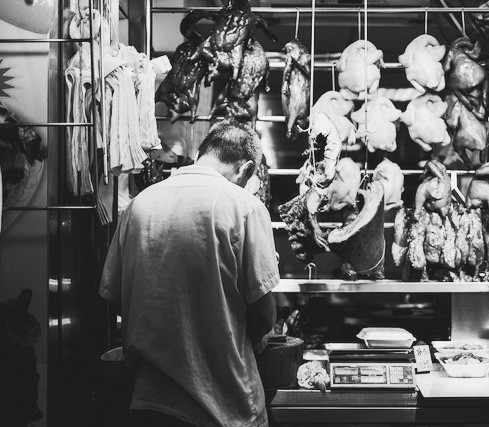
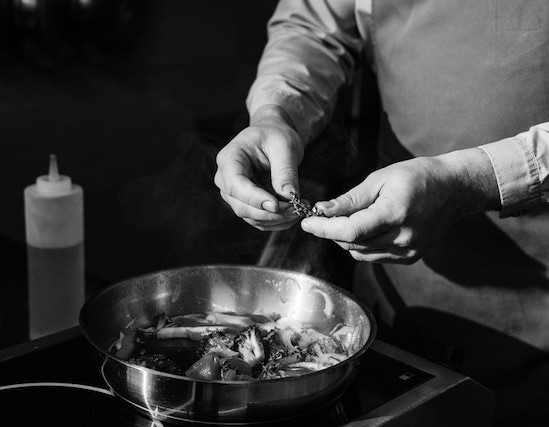

Em meados dos anos 80 surgiu um pequeno talho, próximo a uma quinta onde criava-se um rebanho de vacas. Esse talho era gerido por um jovem de 27 anos, com esposa e filhos. Tal jovem, conhecido por Graciliano, era bastante experiente no corte de carne e atraiu uma clientela fiel em poucos meses de estabelecimento aberto. Aquele talho viria a ser, de facto, um sucesso.

Cerca de três anos depois, Graciliano decidiu vender espetos aos fins de semana, assando a carne em frente ao talho e atraindo ainda mais clientes. Aos poucos, passou a servir porções de comida junto à carne. Ali surgia a primeira ideia do que viria a se tornar o Restaurante Graciliano.

Hoje, muitas décadas depois, o Restaurante Graciliano alimenta centenas de pessoas diariamente. E você pode saber mais detalhes dessa incrível história! Sabe como? Contacte-nos e marque uma reunião com o nosso fundador e chef, Graciliano.